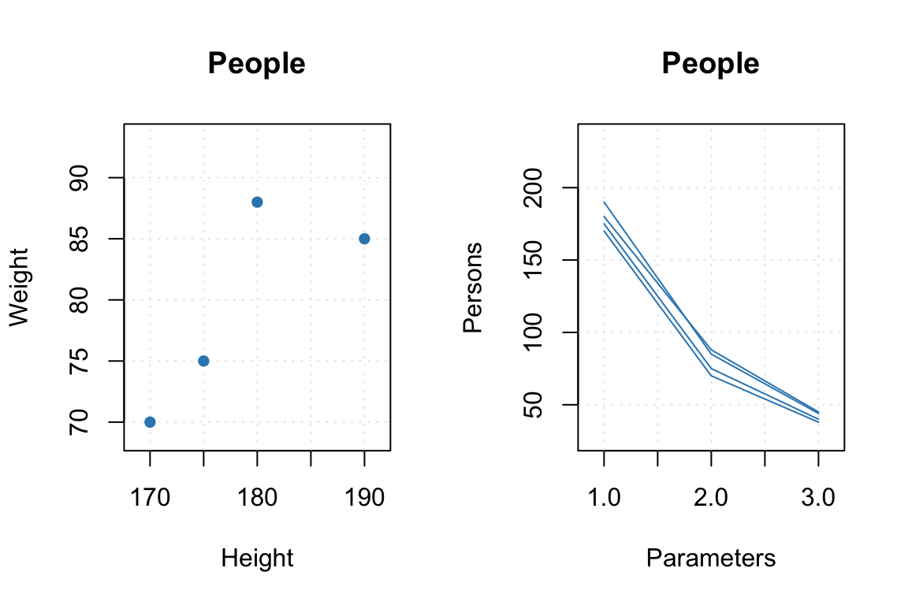

1 Datasets and plots
The package uses standard representation of the data in R: data frames, matrices and vectors. However, there are several additional methods and attributes, which make the use of the datasets a bit more more efficient. There is also a support for images. But if you are used to simple datasets and standard procedures and do not want any complications, you can simply skip this chapter.
The package also uses its own set of plotting tools, which is a sort of an add-on for the R basic plotting system, extending its possibilities. From this point of view, learning how these tools work will simplify understanding of model plots a lot. The main improvements comparing to the basic plotting system are:
- Much easier way to make plots with groups of objects (points, lines, bars, etc.)
- Much easier way of adding legend to the group plots.
- Much easier way of adding labels to data points, bars, etc.
- Automatic axis limits when a plot contains several groups of objects.
- Possibility to color points and lines according to values of a specific numerical variable of a factor.
- Two built in color pallets and an easy way to use user specific set of colors.
- Much more!
This chapter explains most of the details.
Attributes and factors
This section tells how to extend the functionality of the package by using attributes assigned to datasets and how the implemented methods deal with factors.
Package specific attributes
There are several groups of attributes, which allow to assign names and manual x-values to the datasets, exclude columns and rows from calculations without removing them physically as well as working with images. We will illustrate how to work with most of the attributes by using a simple dataset defined below. It consists of three variables Height, Weight, Shoesize and four records/objects/rows.
d = matrix(c(190, 180, 170, 175, 85, 88, 70, 75, 44, 45, 38, 40), ncol = 3)
colnames(d) = c('Height', 'Weight', 'Shoesize')
rownames(d) = c('Bob', 'Peter', 'Lisa', 'Lena')
d = as.data.frame(d)
show(d)## Height Weight Shoesize
## Bob 190 85 44
## Peter 180 88 45
## Lisa 170 70 38
## Lena 175 75 40Attributes for plots
These attributes will be explained very briefly here, you can find much more details in the next two sections. The idea is to provide some names and values to the data, which can be used later e.g. for making labels and titles on the plots. When dataset is used to create a model (e.g. PCA) all results representing objects (e.g. scores, Q-residuals, T2-residuals, etc.) will inherit the row specific attributes and all results representing objects (e.g. loadings) will inherit column specific attributes.
The attributes are following:
| Attribute | Meaning |
|---|---|
name |
name of a dataset (used for plot parameter main) |
xaxis.name |
name for all data columns (used for plot parameter xlab) |
yaxis.name |
name for all data rows (used for plot parameter ylab) |
xaxis.values |
a vector of values, which correspond to the columns (e.g. for spectroscopic data it can be wavelength or wavenumbers) |
yaxis.values |
a vector of values, which correspond to the rows (e.g. for kinetic data it can be time or temperature of reaction) |
Here is a very simple example.
attr(d, 'name') = 'People'
attr(d, 'xaxis.name') = 'Parameters'
attr(d, 'yaxis.name') = 'Persons'
par(mfrow = c(1, 2))
mdaplot(d, type = 'p')
mdaplot(d, type = 'l')
par(mfrow = c(1, 1))See more details in the section about plots.
Excluding/hiding rows and columns
When we are working with models, one of the most common procedures is hiding outliers and irrelevant or not important variables. It can be done simply by removing corresponding rows and columns. However the more flexible way will be just to mark them as excluded, therefore it was decided to create some tools to make this part of data analysis a bit easier.
The main idea is very simple. Any dataset (matrix or a data frame) may have two attributes: exclrows for rows that should not be used when model is created and exclcols — similar parameter for columns. The simplest way to excluded rows or columns is to provide number, names or a vector with logical values as a value of the attributes. However, especially when removing items is a sequential procedure and there are no names for rows or/and variables, it will be much easier to use the specific methods: mda.exclrows() and mda.exclcols(). Both functions take row or column numbers, names or a vector with logical values and convert them to indices taking into account the previously excluded objects.
Here is an example of two step procedure for hiding/excluding objects using these methods. We will use another package specific method, mda.show(), which hides the excluded elements.
Let’s start with showing the original dataset again.
mda.show(d)## People
## ------
## Height Weight Shoesize
## Bob 190 85 44
## Peter 180 88 45
## Lisa 170 70 38
## Lena 175 75 40Now we will hide all rows with Height above 180 cm (actually this is only one row).
d = mda.exclrows(d, d$Height > 180)
mda.show(d)## People
## ------
## Height Weight Shoesize
## Peter 180 88 45
## Lisa 170 70 38
## Lena 175 75 40Then we exclude the second row from the available data.
d = mda.exclrows(d, 2)
mda.show(d)## People
## ------
## Height Weight Shoesize
## Peter 180 88 45
## Lena 175 75 40Show indices of the excluded rows. Note that the second row we excluded in the last step, was third in the original data and this index is kept in the attributes.
attr(d, 'exclrows')## [1] 1 3We can also unhide the rows using the indices.
d = mda.inclcols(d, c(1, 3))
mda.show(d)## People
## ------
## Height Weight Shoesize
## Peter 180 88 45
## Lena 175 75 40Working with columns is similar, but in this case you need to use method mda.exclcols().
What happen to the excluded items when one calibrates or apply a model, e.g. PCA? In this case the outcome, e.g. scores and loadings will correspond to the original size of the data, but:
Loadings will be computed without hidden objects and variables
Matrix with loadings will have zero values for the hidden variables and the corresponding columns will be also marked as excluded.
Matrix with scores will have score values calculated for the hidden objects but the rows will be excluded.
So you can always see the scores and e.g. residuals for the excluded objects if necessary. More details will be shown in the PCA chapter.
1.0.1 Special methods for data transformations
Since data objects in R lose all user specified attributes when e.g. we transpose them or taking a subset it was decided to write several methods, which process attributes correctly. They also adjust indices of excluded rows and columns when user takes a subset or merge two data objects together. When data matrix is transposed the corresponding method will switch the x- and y- attributes. All methods with a brief description are listed in the table below (including the ones already introduces).
| Method | Description |
|---|---|
mda.show(data) |
Show data object without excluded elements |
mda.exclrows(data, ind) |
Exclude (hide) rows from a data object |
mda.exclcols(data, ind) |
Exclude (hide) columns from a data object |
mda.inclrows(data, ind) |
Include (make visible) rows in a data object |
mda.inclcols(data, ind) |
Include (make visible) columns in a data object |
mda.t(data) |
Transpose data object |
mda.cbind(data1, data2, ...) |
Merge several datasets by columns |
mda.rbind(data1, data2, ...) |
Merge several datasets by rows |
mda.subset(data1, subset, select) |
Take a subset of data object (subset is numeric indices, names or logical values for rows, select — the same for columns) |
attrs = mda.getattr(data) |
Return all user specific attributes from an object |
data = mda.getattr(data, attrs) |
Assign user specific attributes to an object |
Data frames with factors
All methods, implemented in the package, work with matrices, therefore, if a user provides data values as data frame, it is converted to matrix. From version 0.8.0 it is also possible to provide data frames with one or several factor columns. In this case all factors will be converted to dummy variables with values –1 and +1. You can also do it manually, by using function prep.df2mat() as this is shown in an example below.
Let us first crate a simple data with a factor column.
h = c(180, 175, 165, 190, 188)
c = c('Gray', 'Green', 'Gray', 'Green', 'Blue')
d = data.frame(Height = h, Eye.color = c)
show(d)## Height Eye.color
## 1 180 Gray
## 2 175 Green
## 3 165 Gray
## 4 190 Green
## 5 188 BlueAnd this is the result of converting it to a matrix.
d.mat = mda.df2mat(d)
show(d.mat)## Height Eye.color.Blue Eye.color.Gray
## [1,] 180 0 1
## [2,] 175 0 0
## [3,] 165 0 1
## [4,] 190 0 0
## [5,] 188 1 0The number of dummy variables is always the number of levels minus one. It is important to have level labels in all factor columns of the same data frame unique, as they are used for names of the dummy variables. If a factor is hidden it will be just converted to numeric values and remain excluded from modelling.
Simple plots
In this section we will look at how to make simple plots from your data objects. As it was already mentioned, mdatools has its own function for plotting with several extra options not available in R basic plot tools. If you are going to make all plots manually (e.g. using ggplot2) you can skip this and the next sections.